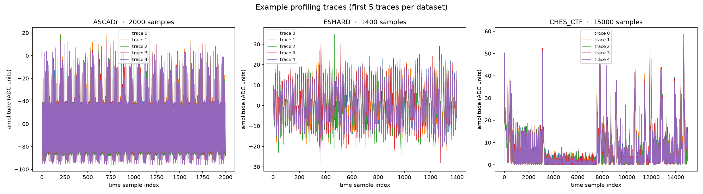
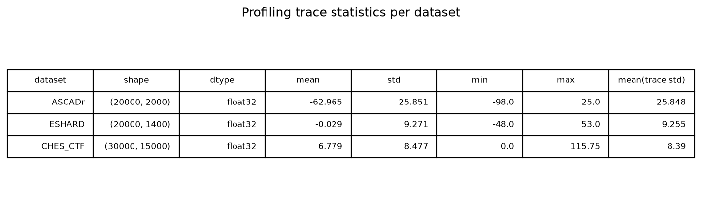

Chapter 4 — The datasets we will live in
We work with three public datasets, each a collection of side-channel measurements of AES-128. All three come from implementations protected with Boolean masking (Chapter 3), and in all three the attack targets the first encryption round. What changes is the device, the measured quantity, and the trace length:
| Dataset | Device | Measured | Traces (profiling / attack) | Samples per trace |
|---|---|---|---|---|
| ASCADr | 8-bit AVR microcontroller (ATMega8515) | electromagnetic emissions | 200,000 / 10,000 | 2,000 |
| ESHARD | 32-bit ARM Cortex-M4 | electromagnetic emissions | 90,000 / 10,000 | 1,400 |
| CHES_CTF | 32-bit ARM Cortex-M4 | power consumption | 30,000 / 10,000 | 15,000 |
The running example for most of what follows is ASCADr (identity leakage, MLP). ESHARD and CHES_CTF return later for contrast. Full field-by-field detail, including download links: appendix.
Where do the datasets come from?
All three are public benchmarks from the side-channel research community:
- ASCADr — the variable-key variant of ASCAD (ANSSI SCA Database), released by ANSSI, the French cybersecurity agency, as a benchmark for deep-learning side-channel research (github.com/ANSSI-FR/ASCAD).
- ESHARD — the trimmed public version of the ESHARD-AES128 dataset: electromagnetic measurements of a masked, shuffled AES-128; the trim keeps the first round without shuffling.
- CHES_CTF — traces released for the Capture-the-Flag competition of the CHES 2018 conference (Cryptographic Hardware and Embedded Systems), the main academic venue of the field.
The raw measurements are far too large to work with directly (hundreds of thousands of samples per trace), so the paper uses trimmed and resampled windows around the first AES round — that is what our files contain.
What is inside each file?
Each dataset is a single .h5 file — an HDF5 file. HDF5 is a container
format for large numerical arrays, organized like a filesystem: groups
(folders) holding datasets (arrays). You cannot read it in a text editor;
you open it with a library such as h5py:
flowchart TD
F["eschard.h5"] --> P["Profiling_traces/"]
F --> A["Attack_traces/"]
P --> PT["traces<br/>90,000 × 1,400 EM measurements"]
P --> PM["metadata<br/>plaintext, key, masks per trace"]
A --> AT["traces<br/>10,000 × 1,400"]
A --> AM["metadata<br/>plaintext, key, masks per trace"]The metadata array is our ground truth. Each record holds the cryptographic
values that produced the trace in the same row. With plaintext and key we
can compute the leakage label of every trace (see
Chapter 2):
label = sbox[plaintext[byte] ^ key[byte]] # identity model
hw = popcount(sbox[plaintext[byte] ^ key[byte]]) # Hamming weight model
Profiling vs attack
Every dataset is divided into two disjoint sets:
- Profiling set: traces where everything is known (plaintext, key, masks). Used to train the model — the deep learning equivalent of "profiling the device".
- Attack set: traces where the key is known to the evaluator but treated as unknown to the attacker. Used to test whether the trained model can actually recover the key from fresh measurements.
flowchart LR
subgraph train["Training (we own this device)"]
P["profiling set<br/>everything known"] --> M["model learns:<br/>trace → label"]
end
subgraph eval["Evaluation (the target device)"]
A["attack set<br/>key hidden from the model"] --> R["model ranks<br/>the 256 key candidates"]
end
M --> RThis mirrors real life: an attacker first trains a model on a device they own, then uses that same model against a target device of the same type.
A first look
Each figure below is generated in the companion notebook; here is the summary.
Trace shapes. Traces from the three datasets look nothing alike — compare the short traces of ESHARD with the long, spiky traces of CHES_CTF. The main reason is the physical measurement itself: ESHARD and ASCADr record the electromagnetic emanations of the chip with a probe placed near its surface, while CHES_CTF records the power the chip draws from its supply. The targets also differ — two ARM Cortex-M4 boards and one 8-bit AVR — so clock speed and trace length differ too. Within one dataset the setup is fixed, so traces differ only slightly from one recording to the next; most of that variation is measurement noise, and the small data-dependent part is what the attack exploits.

Scale and noise. The datasets also differ in numeric scale and dtype:
ASCADr stores raw ADC codes as int8, CHES_CTF uses float16. This is why
models scale their inputs before training.

The SNR map of where the key leaks was the subject of Chapter 3. With the files in hand, the next question is what function a neural network computes on these traces.
The exploration notebook
Opening an .h5 file by hand, reading one metadata record, and computing the
statistics and the SNR is worked through in the
data exploration notebook.
← Previous: Chapter 3 — Masking · Index · Next: Chapter 5 — The network →